第二十一课：XIAO ESP32S3 硬件接口与电路设计原理
从本课开始，我们正式从软件开发进入硬件设计。
前面二十课，我们学习了如何通过 ESP-IDF、FreeRTOS 和 Codex 开发 XIAO ESP32S3。
但如果要真正设计自己的电路板、修改外围电路、制作 PCB 和 3D 打印外壳，还必须理解芯片与外部电路之间是如何工作的。
本课以 Seeed XIAO ESP32S3 普通版 为唯一主控对象。
我们将重点学习：
- 芯片 GPIO 内部结构。
- GPIO 输入与输出原理。
- 上拉电阻与下拉电阻。
- GPIO 中断。
- ADC 模数转换。
- PWM 脉宽调制。
- GPIO 电气保护。
- 实际接线与 ESP-IDF 代码。
- 示波器和万用表调试。
- 在 XIAO ESP32S3 项目中的应用。
一、先理解 XIAO ESP32S3 的硬件结构
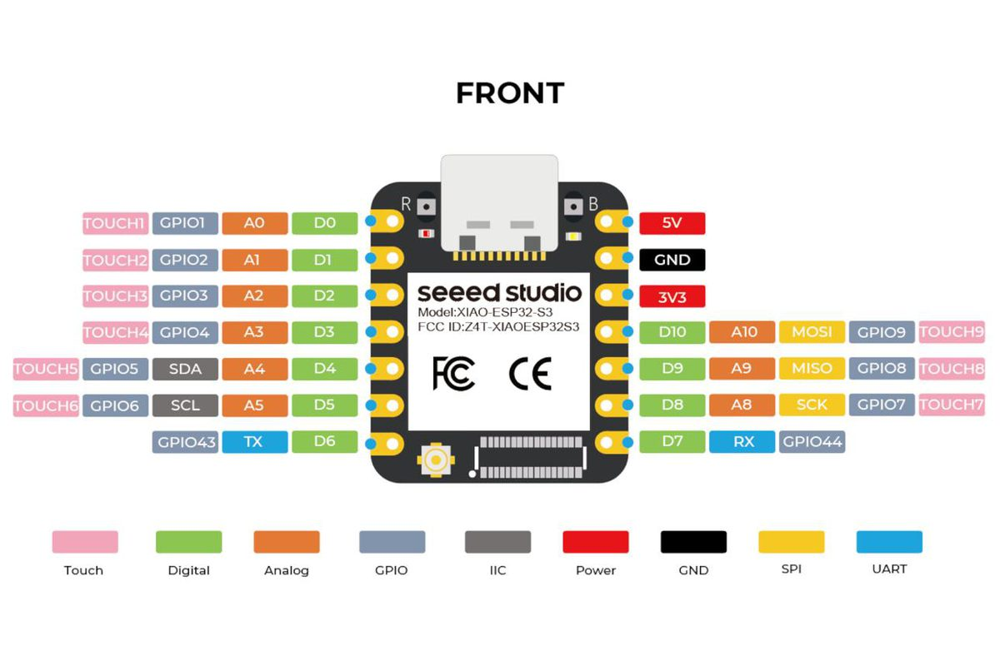
XIAO ESP32S3 是一块非常小的 ESP32-S3 开发板。
它不仅包含 ESP32-S3 芯片，还集成了外围电路。
可以把它分成五个部分：
这里需要先建立一个重要认识：
ESP32-S3 芯片的引脚能力，不等于开发板所有引脚都可以自由使用。
因为开发板上可能已经将部分 GPIO 用于 Flash、PSRAM、USB 或其他板载电路。
二、GPIO 是什么？为什么一个引脚能实现多种功能？
GPIO 的英文是 General Purpose Input/Output，即通用输入输出。
它是微控制器与外部世界连接的基本接口。
例如：
- 读取按钮状态；
- 控制 LED；
- 读取传感器数字信号；
- 控制继电器；
- 输出 PWM；
- 接收外部中断。
1. GPIO 内部结构
一个 GPIO 并不是简单的一根导线。
它内部包含多个电路模块。
GPIO 内部功能示意
GPIO 的输入和输出功能由内部配置控制。
同一个 GPIO 可以在不同时间承担不同功能，但不能随意同时让多个外设驱动同一个引脚。
2. GPIO 的三种基本状态
| 状态 | 意义 | 应用 |
|---|---|---|
| Input | 输入 | 读取按钮 |
| Output | 输出 | 控制 LED |
| Input/Output | 双向 | 某些数字通信场景 |
此外，还有高阻输入、上拉输入和下拉输入等配置。
3. 什么是高电平和低电平？
对于 XIAO ESP32S3 的 3.3V GPIO：
- 低电平：接近 GND；
- 高电平：接近 3.3V。
但实际数字输入的高低电平判定阈值由芯片电气规格决定，不是所有介于 0V 和 3.3V 之间的电压都能可靠识别。
绝对不能把 5V 信号直接接到 ESP32-S3 普通 GPIO。
需要通过电平转换或合适的保护电路处理。
三、GPIO 输出原理：为什么可以控制 LED？
我们先从最简单的 LED 电路理解 GPIO。
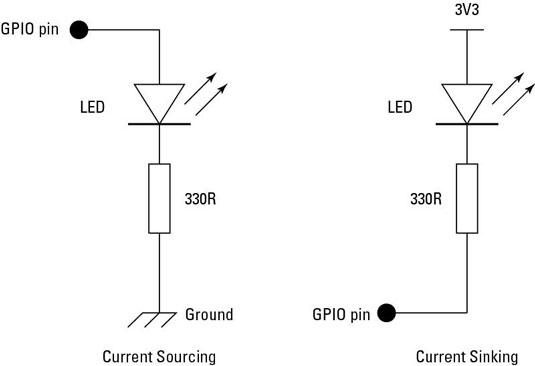
典型连接：
GPIO
|
|
限流电阻
|
|
LED
|
GNDGPIO 输出高电平时，电流从 GPIO 流经电阻和 LED 到 GND，LED 发光。
GPIO 输出低电平时，LED 熄灭。
1. 为什么必须串联电阻？
LED 不能简单地直接连接 3.3V 电源。
因为 LED 的电流需要受到限制。
使用欧姆定律：
假设：
- GPIO 电压：3.3V；
- LED 正向压降：2.0V；
- 目标电流：5mA。
那么：
可以选择标准阻值 270Ω。
2. 电阻功耗
也就是约 6.75mW。
对于这个例子，常见的 1/8W 或 1/4W 电阻都足够。
实际还需要核对 LED 参数和 GPIO 输出能力。
3. ESP-IDF 控制 LED
#include "driver/gpio.h"
#include "freertos/FreeRTOS.h"
#include "freertos/task.h"
#define LED_GPIO GPIO_NUM_4
void app_main(void)
{
gpio_config_t config = {
.pin_bit_mask = 1ULL << LED_GPIO,
.mode = GPIO_MODE_OUTPUT,
.pull_up_en = GPIO_PULLUP_DISABLE,
.pull_down_en = GPIO_PULLDOWN_DISABLE,
.intr_type = GPIO_INTR_DISABLE
};
ESP_ERROR_CHECK(gpio_config(&config));
while (1) {
gpio_set_level(LED_GPIO, 1);
vTaskDelay(pdMS_TO_TICKS(500));
gpio_set_level(LED_GPIO, 0);
vTaskDelay(pdMS_TO_TICKS(500));
}
}注意：这里 GPIO4 只是示例，烧录前必须确认它在普通版 XIAO ESP32S3 上没有被其他硬件占用。
四、上拉电阻和下拉电阻：为什么按钮不能直接悬空？
这是硬件设计中非常重要的知识。
假设一个 GPIO 连接了按钮。
如果按钮没有按下，GPIO 没有连接明确的高电平或低电平，它可能处于悬空状态。
悬空输入容易受到环境噪声影响，读数可能随机变化。
1. 上拉电阻
按钮上拉电路
工作状态：
| 按钮状态 | GPIO 读取 |
|---|---|
| 未按下 | HIGH |
| 按下 | LOW |
2. 下拉电阻
下拉电路则相反。
3.3V
|
按钮
|
GPIO
|
10kΩ
|
GND此时：
- 按钮未按下：LOW；
- 按钮按下：HIGH。
3. 内部上拉与外部上拉
ESP32-S3 提供内部上拉和下拉功能。
ESP-IDF 示例：
gpio_config_t config = {
.pin_bit_mask = 1ULL << BUTTON_GPIO,
.mode = GPIO_MODE_INPUT,
.pull_up_en = GPIO_PULLUP_ENABLE,
.pull_down_en = GPIO_PULLDOWN_DISABLE,
.intr_type = GPIO_INTR_DISABLE
};
ESP_ERROR_CHECK(gpio_config(&config));内部上拉适合很多普通按钮场景。
外部上拉则适用于：
- 对抗干扰要求更高；
- 需要明确的上拉阻值；
- 外部电路要求更可靠的默认电平；
- 特定低功耗或电气设计场景。
五、GPIO 中断：如何让芯片主动感知外部变化？
前面我们使用循环读取按钮状态：
while (1) {
int level = gpio_get_level(BUTTON_GPIO);
vTaskDelay(pdMS_TO_TICKS(10));
}这种方式称为轮询（Polling）。
它的问题是：CPU 需要不断检查 GPIO 状态。
如果有很多按钮、传感器和外部信号，轮询会增加任务管理负担。
GPIO 中断可以解决这个问题。
1. 什么是中断？
假设按钮连接到 GPIO。
当按钮按下时，GPIO 电平发生变化。
芯片可以检测这个变化，并触发中断。
正常执行程序
|
|
等待外部信号
|
↓
按钮按下
|
↓
GPIO 电平变化
|
↓
触发中断
|
↓
执行中断处理程序
|
↓
恢复原来的任务2. GPIO 中断类型
ESP32-S3 常见 GPIO 中断模式包括：
| 类型 | 触发条件 |
|---|---|
GPIO_INTR_POSEDGE | 上升沿 |
GPIO_INTR_NEGEDGE | 下降沿 |
GPIO_INTR_ANYEDGE | 任意边沿 |
GPIO_INTR_LOW_LEVEL | 低电平 |
GPIO_INTR_HIGH_LEVEL | 高电平 |
例如，按钮采用上拉接法：
- 未按下：HIGH；
- 按下：LOW。
因此，按钮按下时产生下降沿。
可以使用：
GPIO_INTR_NEGEDGE3. ESP-IDF 中断示例
#include "driver/gpio.h"
#include "esp_log.h"
#define BUTTON_GPIO GPIO_NUM_5
static const char *TAG = "BUTTON";
static void IRAM_ATTR button_isr(void *arg)
{
BaseType_t higher_priority_task_woken = pdFALSE;
TaskHandle_t task =
(TaskHandle_t)arg;
vTaskNotifyGiveFromISR(
task,
&higher_priority_task_woken
);
if (higher_priority_task_woken) {
portYIELD_FROM_ISR();
}
}初始化中断：
void button_init(TaskHandle_t task)
{
gpio_config_t config = {
.pin_bit_mask = 1ULL << BUTTON_GPIO,
.mode = GPIO_MODE_INPUT,
.pull_up_en = GPIO_PULLUP_ENABLE,
.pull_down_en = GPIO_PULLDOWN_DISABLE,
.intr_type = GPIO_INTR_NEGEDGE
};
ESP_ERROR_CHECK(gpio_config(&config));
ESP_ERROR_CHECK(gpio_install_isr_service(0));
ESP_ERROR_CHECK(
gpio_isr_handler_add(
BUTTON_GPIO,
button_isr,
(void *)task
)
);
}任务中接收通知：
void button_task(void *arg)
{
while (1) {
ulTaskNotifyTake(
pdTRUE,
portMAX_DELAY
);
ESP_LOGI("BUTTON", "Button event");
}
}这是一个基本的中断通知结构，完整工程还需要先创建 button_task，并处理重复安装 ISR 服务、按钮抖动和任务句柄生命周期等问题。
4. 为什么中断函数不能写太多代码？
因为中断处理程序运行在特殊的执行环境中。
不要在 GPIO ISR 中：
- 使用
vTaskDelay()； - 调用普通阻塞队列；
- 执行长时间计算；
- 进行网络通信；
- 大量打印日志；
- 动态申请内存。
正确方式是：
中断只负责通知任务，具体业务交给 FreeRTOS 任务完成。
六、机械按钮为什么会抖动？如何消抖？
这是实际电路中经常遇到的问题。
按钮并不是理想开关。
按下或松开时，金属触点可能在短时间内多次接触和分离。
这称为机械抖动（Switch Bounce）。
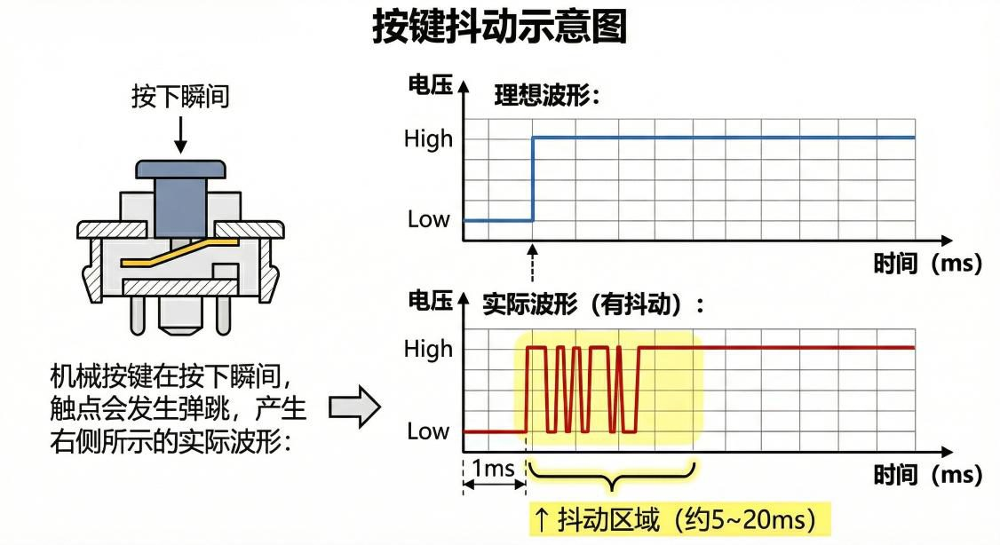
假设你按下一次按钮，GPIO 可能检测到：
HIGH
LOW
HIGH
LOW
HIGH
LOW
LOW但你实际上只按了一次。
1. 软件消抖
最简单的方法是：
检测到中断后，延迟一段时间，再确认 GPIO 是否仍处于按下状态。
例如：
void button_task(void *arg)
{
while (1) {
ulTaskNotifyTake(
pdTRUE,
portMAX_DELAY
);
vTaskDelay(pdMS_TO_TICKS(30));
if (gpio_get_level(BUTTON_GPIO) == 0) {
ESP_LOGI("BUTTON", "Valid press");
}
}
}这只是入门示例。
真实项目还应处理消抖期间的重复通知、长按和释放事件。
2. 硬件消抖
可以使用 RC 电路。
RC 消抖基本原理
RC 电路的时间常数：
例如：
- R = 10kΩ；
- C = 100nF。
则：
实际电平变化还取决于阈值、充放电路径和电路结构。
需要注意，简单 RC 滤波不一定适合所有输入电路，设计时还应考虑 GPIO 输入阈值和上升、下降时间。
七、ADC：ESP32-S3 如何读取模拟电压？
GPIO 主要用于识别数字信号。
但是很多传感器输出的是连续变化的电压。
例如：
- 光敏电阻；
- 电位器；
- 模拟温度传感器；
- 电池电压检测；
- 模拟压力传感器。
这时需要 ADC。
ADC 的完整名称是 Analog-to-Digital Converter，即模数转换器。
1. ADC 工作原理
假设传感器输出：
0V ───────── 3.3VADC 将连续电压转换为数字数值。
ESP32-S3 的 ADC 支持 12 位转换结果。
理想化情况下：
也就是 0～4095 共 4096 个数字等级。
ADC 转换示意
约 2048
仅为理想化示意2. ADC 的理论分辨率
如果参考电压假设为 3.3V：
这表示理想情况下每一个数字等级对应约 0.806mV 的电压区间。
但必须注意：
ESP32-S3 的 ADC 不能简单理解为固定 3.3V 满量程、完全线性的理想转换器。
实际测量结果还受到以下因素影响：
- ADC 衰减配置；
- 芯片参考电压差异；
- ADC 非线性；
- 输入噪声；
- 采样时间；
- 电路阻抗；
- 校准情况。
ESP-IDF 提供 ADC Calibration Driver，可以改善电压换算精度。
3. ESP-IDF ADC 代码
使用 ESP-IDF 新版 ADC One-shot 驱动：
#include "esp_adc/adc_oneshot.h"
#include "esp_adc/adc_cali.h"
#include "esp_adc/adc_cali_scheme.h"
#include "esp_log.h"
#define ADC_CHANNEL ADC_CHANNEL_2
static adc_oneshot_unit_handle_t adc_handle;
void adc_init(void)
{
adc_oneshot_unit_init_cfg_t init_config = {
.unit_id = ADC_UNIT_1,
};
ESP_ERROR_CHECK(
adc_oneshot_new_unit(
&init_config,
&adc_handle
)
);
adc_oneshot_chan_cfg_t channel_config = {
.atten = ADC_ATTEN_DB_12,
.bitwidth = ADC_BITWIDTH_DEFAULT
};
ESP_ERROR_CHECK(
adc_oneshot_config_channel(
adc_handle,
ADC_CHANNEL,
&channel_config
)
);
}读取 ADC：
void adc_read_value(void)
{
int raw = 0;
ESP_ERROR_CHECK(
adc_oneshot_read(
adc_handle,
ADC_CHANNEL,
&raw
)
);
ESP_LOGI(
"ADC",
"Raw value: %d",
raw
);
}这里 ADC_CHANNEL_2 是芯片 ADC 通道示例，不等于可以直接接到 XIAO 某个编号引脚。
实际开发必须先通过普通版 XIAO ESP32S3 引脚映射确认 GPIO 和 ADC 通道之间的关系。
4. ADC 校准
如果需要获得更准确的毫伏值，可以使用：
adc_cali_raw_to_voltage(
calibration_handle,
raw,
&voltage_mv
);校准句柄需要先按照当前芯片和 ESP-IDF 版本支持的校准方案创建。
5. ADC 在 XIAO 项目中的应用
建议先做一个电位器实验。
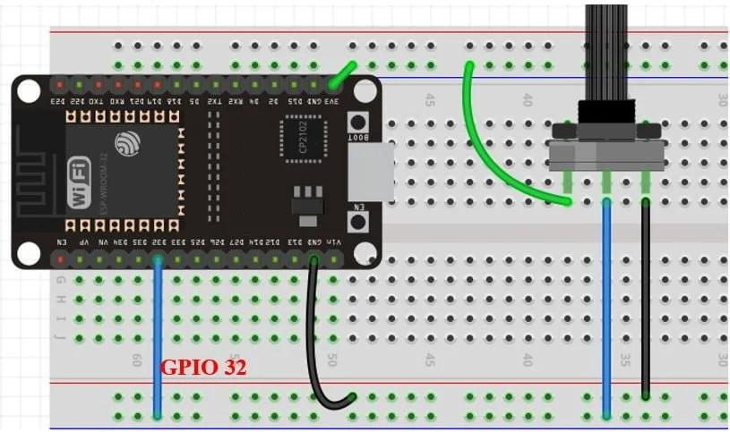
连接逻辑：
| 电位器端子 | 连接 |
|---|---|
| 一端 | 3.3V |
| 另一端 | GND |
| 中间端 | 已确认支持 ADC 的 XIAO GPIO |
旋转电位器，就可以观察 ADC 数值变化。
不要将电位器接到 5V 后再把中间端接入 ESP32-S3 GPIO。
八、PWM：为什么 GPIO 可以控制 LED 亮度和电机速度？
PWM 的英文是 Pulse Width Modulation，即脉宽调制。
它通过快速切换数字输出的高低电平，改变高电平占整个周期的比例。
1. 什么是占空比？
假设一个 PWM 周期为 1ms。
其中：
- 高电平 0.25ms；
- 低电平 0.75ms。
那么：
PWM 波形对比
2. PWM 的平均电压
在理想数字输出且负载适合平均化的情况下：
如果高电平为 3.3V：
| 占空比 | 理想平均电压 |
|---|---|
| 25% | 0.825V |
| 50% | 1.65V |
| 75% | 2.475V |
| 100% | 3.3V |
注意，PWM 并不是真正产生连续的模拟电压。
如果需要稳定的模拟电压，可以通过合适的低通滤波电路进行转换。
3. ESP32-S3 的 LEDC 外设
ESP32-S3 使用 LEDC 外设产生 PWM。
ESP-IDF 示例：
#include "driver/ledc.h"
#include "esp_err.h"
#define PWM_GPIO GPIO_NUM_4
void pwm_init(void)
{
ledc_timer_config_t timer = {
.speed_mode = LEDC_LOW_SPEED_MODE,
.duty_resolution = LEDC_TIMER_10_BIT,
.timer_num = LEDC_TIMER_0,
.freq_hz = 5000,
.clk_cfg = LEDC_AUTO_CLK
};
ESP_ERROR_CHECK(
ledc_timer_config(&timer)
);
ledc_channel_config_t channel = {
.gpio_num = PWM_GPIO,
.speed_mode = LEDC_LOW_SPEED_MODE,
.channel = LEDC_CHANNEL_0,
.intr_type = LEDC_INTR_DISABLE,
.timer_sel = LEDC_TIMER_0,
.duty = 0,
.hpoint = 0
};
ESP_ERROR_CHECK(
ledc_channel_config(&channel)
);
}设置 50% 占空比：
void pwm_set_50_percent(void)
{
ESP_ERROR_CHECK(
ledc_set_duty(
LEDC_LOW_SPEED_MODE,
LEDC_CHANNEL_0,
512
)
);
ESP_ERROR_CHECK(
ledc_update_duty(
LEDC_LOW_SPEED_MODE,
LEDC_CHANNEL_0
)
);
}这里使用 10 位分辨率：
因此 512 对应约 50% 占空比。
4. PWM 有哪些实际用途？
- LED 亮度调节；
- 蜂鸣器音调控制；
- 电机驱动信号；
- 舵机控制；
- 某些功率调节场景。
对于电机和大功率负载，GPIO 不能直接驱动，必须使用 MOSFET、驱动芯片和相应的保护电路。
九、I2C：为什么两个引脚就能连接很多传感器？
I2C 是一种常用的串行通信协议。
它只需要两根信号线：
- SDA：数据线；
- SCL：时钟线。
例如，一块 XIAO ESP32S3 可以通过 I2C 连接：
- OLED 显示屏；
- 温湿度传感器；
- 气压传感器；
- RTC 时钟；
- IO 扩展芯片。
1. I2C 电路原理
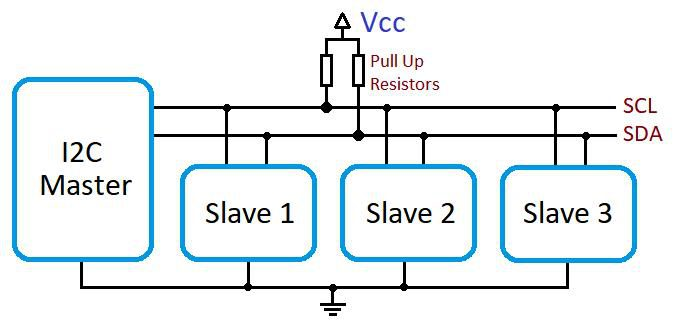
I2C 的一个重要特点：
SDA 和 SCL 通常采用开漏输出，需要上拉电阻。
为什么？
因为总线上的多个设备需要共同使用信号线。
设备可以主动将线路拉低，但不应该直接强行输出高电平与其他设备对抗。
典型连接：
3.3V
|
+-----+-----+
| |
4.7K 4.7K
| |
SDA -----+-----------+---- 各个设备 SDA
SCL ----------------------- 各个设备 SCL
GND ----------------------- 所有设备 GND上图为逻辑示意，实际 SDA、SCL 应各自具有一组上拉电阻。
2. 为什么常见上拉电阻是 4.7kΩ？
它是常见的起始选择，但不是固定值。
电阻太大：
- 上升沿变慢；
- 高速通信可能不稳定。
电阻太小：
- 低电平时需要更大的灌电流；
- 可能超过设备输出能力。
最终要根据：
- 总线电容；
- 通信速度；
- 设备数量；
- 线路长度；
- 器件电气规格；
来确定。
还要注意：如果多个模块都已经带有上拉电阻，并联后的等效阻值可能过小。
3. I2C 地址是什么？
假设连接了两个设备：
OLED：0x3C
温湿度传感器：0x44主控通过设备地址选择通信对象。
这意味着多个设备可以共享 SDA 和 SCL，但不能在同一总线上无冲突地使用相同地址，除非设备支持地址修改或采用多路复用器。
4. ESP-IDF I2C 初始化示例
#include "driver/i2c_master.h"
#define I2C_SDA_GPIO GPIO_NUM_5
#define I2C_SCL_GPIO GPIO_NUM_6
static i2c_master_bus_handle_t bus_handle;
void i2c_init(void)
{
i2c_master_bus_config_t config = {
.i2c_port = I2C_NUM_0,
.sda_io_num = I2C_SDA_GPIO,
.scl_io_num = I2C_SCL_GPIO,
.clk_source = I2C_CLK_SRC_DEFAULT,
.glitch_ignore_cnt = 7,
.flags.enable_internal_pullup = false
};
ESP_ERROR_CHECK(
i2c_new_master_bus(
&config,
&bus_handle
)
);
}这里的 SDA、SCL 是演示值，不是已经确认的 XIAO 接线方案。
5. 如何调试 I2C？
建议使用逻辑分析仪观察：
- Start；
- Address；
- ACK；
- Data；
- NACK；
- Stop。
例如：
START
↓
设备地址 0x3C
↓
ACK
↓
发送数据
↓
ACK
↓
STOP如果设备无法识别，优先检查供电、GND、上拉电阻、引脚映射和地址。
十、SPI：为什么显示屏和高速外设经常使用 SPI？
SPI 是一种同步串行通信协议。
典型情况下使用四根信号线：
| 信号 | 功能 |
|---|---|
| SCLK | 时钟 |
| MOSI | 主机发送数据 |
| MISO | 主机接收数据 |
| CS | 片选 |
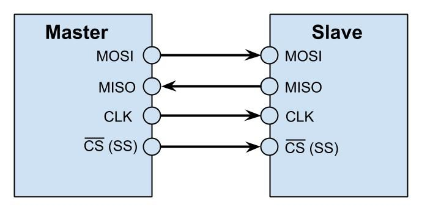
1. SPI 工作原理
主机产生时钟信号。
发送和接收双方按照约定的时钟边沿交换数据。
例如：
ESP32-S3
|
|---- SCLK ---- 外设
|
|---- MOSI ---- 外设
|
|---- MISO ---- 外设
|
|---- CS ------ 外设与 I2C 相比，SPI 通常具有更高的数据传输能力，但需要更多信号线。
2. SPI 的四种工作模式
SPI 的工作模式由 CPOL 和 CPHA 决定。
| 模式 | CPOL | CPHA |
|---|---|---|
| Mode 0 | 0 | 0 |
| Mode 1 | 0 | 1 |
| Mode 2 | 1 | 0 |
| Mode 3 | 1 | 1 |
如果主控和外设配置不一致，就可能出现数据错误。
3. SPI 在 XIAO 项目中的用途
- TFT 彩色显示屏；
- SD 卡；
- 外部 Flash；
- 高速传感器；
- 某些 ADC 和 DAC。
如果你以后设计带显示屏的智能终端，SPI 很值得重点掌握。
十一、UART：串口通信为什么仍然非常重要？
UART 是异步串行通信接口。
常见信号：
- TX：发送；
- RX：接收；
- GND：公共地。
连接方式：
XIAO ESP32S3 USB转串口模块
TX -------------- RX
RX -------------- TX
GND -------------- GND注意 TX 和 RX 需要交叉连接。
1. 波特率是什么？
波特率表示每秒传输的符号数量。
常见设置：
- 9600；
- 115200；
- 921600。
双方必须使用匹配的通信参数。
2. UART 还有哪些配置？
- 数据位；
- 停止位；
- 校验位；
- 硬件流控。
例如：
115200
8 Data Bits
No Parity
1 Stop Bit通常称为 115200 8N1。
3. 一个重要的电气问题
UART 是逻辑通信协议，不代表所有 UART 电气接口都兼容。
XIAO ESP32S3 GPIO 使用 3.3V 逻辑。
不能直接把传统 RS-232 的正负电压信号接到 GPIO。
如果需要连接工业设备，应使用适当的 RS-232 或 RS-485 收发器。
十二、I2S：智能语音终端最重要的音频接口之一
前面我们学习过音频采集和播放。
现在从硬件角度理解 I2S。
I2S 是数字音频串行接口。
常见信号：
| 信号 | 作用 |
|---|---|
| BCLK | 位时钟 |
| WS / LRCLK | 左右声道时钟 |
| DOUT | 数据输出 |
| DIN | 数据输入 |
| MCLK | 某些设备需要的主时钟 |
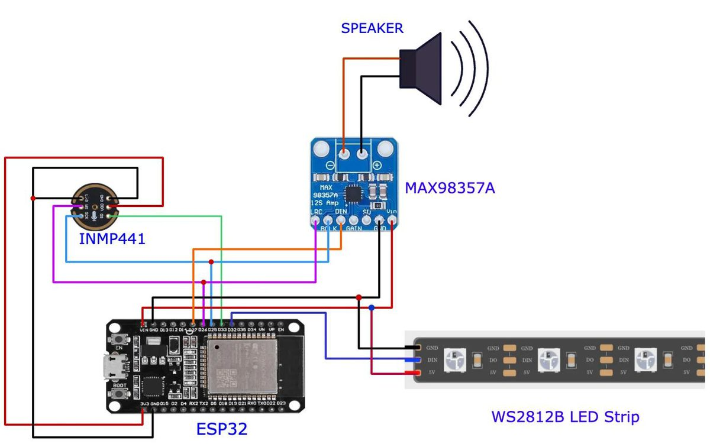
1. 麦克风采集
例如使用数字 I2S 麦克风：
I2S 麦克风
|
| BCLK
| WS
| DOUT
|
XIAO ESP32S3麦克风将声音转换为数字采样数据。
ESP32-S3 通过 I2S 接收。
2. 扬声器播放
例如使用带 I2S 输入的数字功放：
XIAO ESP32S3
|
| BCLK
| WS
| DOUT
|
I2S 功放
|
|
扬声器3. 为什么不能直接用 GPIO 驱动扬声器？
因为 GPIO 只能提供有限的数字输出驱动能力。
扬声器需要相对较大的驱动电流。
因此通常需要：
- 音频功放；
- 合适的扬声器阻抗；
- 电源去耦；
- 合理的地线和音频布局。
对于你正在研究的语音终端，I2S 麦克风和功放是后续必须深入掌握的部分。
十三、GPIO 电气保护：为什么硬件设计不能只考虑能不能接通？
很多初学者能够把传感器连接起来，但没有考虑电气保护。
这可能导致设备偶尔异常，甚至损坏芯片。
1. 过压保护
ESP32-S3 GPIO 不能直接承受任意电压。
如果外部传感器输出 5V，需要根据接口情况设计：
- 电阻分压；
- 电平转换芯片；
- 缓冲器；
- 专用保护电路。
2. ESD 静电保护
如果设备有外露 USB、按钮和外部连接器，静电可能通过接口进入电路。
可以在适当接口使用 ESD 保护器件。
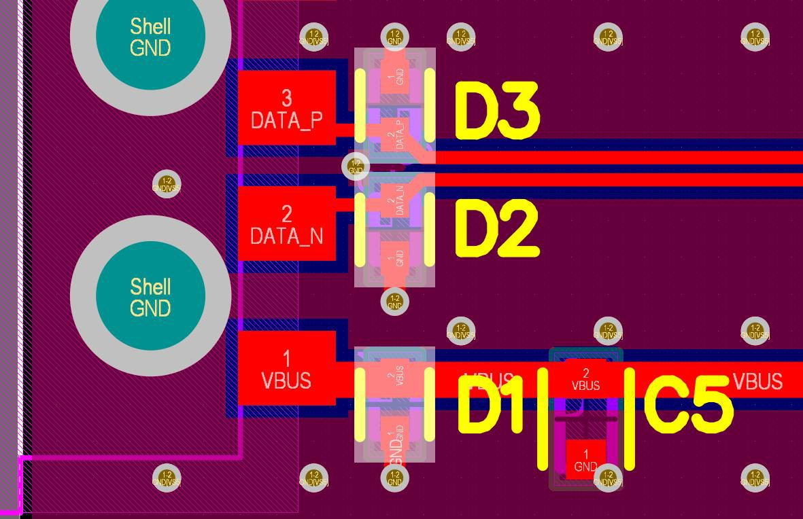
3. 反接保护
如果设备使用外部电池或直流电源，需要考虑反接保护。
常见方法：
- 串联二极管；
- MOSFET 理想二极管结构；
- 专用电源保护芯片。
不同方案在压降、效率和成本上有所区别。
4. 电源去耦
芯片和外设在工作过程中会产生瞬态电流变化。
去耦电容可以帮助降低局部电源阻抗。
常见配置会包括：
- 0.1μF 陶瓷电容；
- 1μF 陶瓷电容；
- 10μF 或更大的储能电容。
但实际数量、位置和容量应根据芯片参考设计、稳压器数据手册以及 PCB 布局确定。
十四、XIAO ESP32S3 的接口调试工具
建议你逐步准备以下工具。
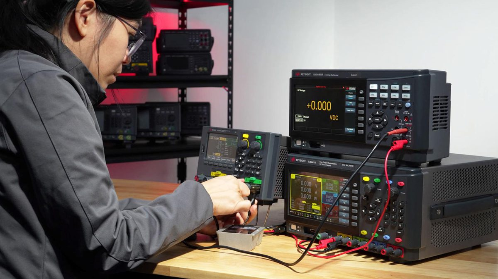
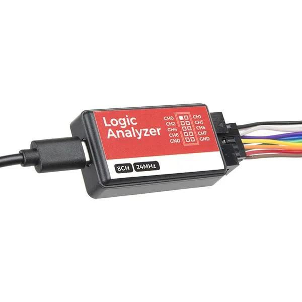
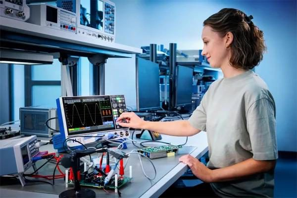
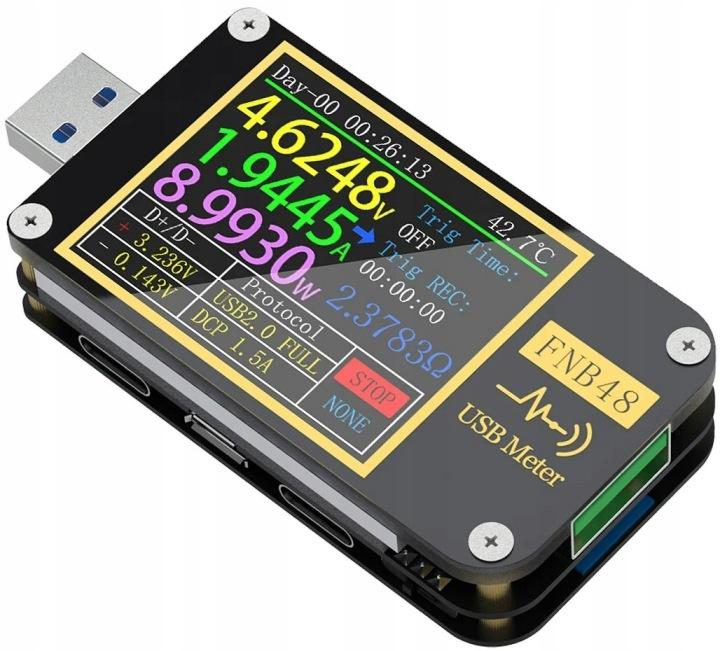
不同问题应该用什么工具？
| 问题 | 首选工具 |
|---|---|
| GPIO 是否输出高电平 | 万用表 |
| 按钮是否抖动 | 示波器 |
| I2C 地址是否正确 | 逻辑分析仪 |
| SPI 时钟是否正常 | 逻辑分析仪 |
| 电源是否瞬间跌落 | 示波器 |
| Wi-Fi 工作时功耗 | 电流测量设备 |
| 软件异常 | 串口日志、GDB |
十五、综合实战：建立 XIAO ESP32S3 硬件接口实验室
建议在你的项目仓库中建立独立的硬件实验工程。
XIAO-ESP32S3-Projects/
└── projects/
└── hardware_interface_lab/
├── 01_gpio_output/
├── 02_gpio_input/
├── 03_gpio_interrupt/
├── 04_button_debounce/
├── 05_adc/
├── 06_pwm/
├── 07_i2c/
├── 08_spi/
├── 09_uart/
├── 10_i2s_microphone/
├── 11_i2s_amplifier/
└── docs/
├── pin_mapping.md
├── electrical_design.md
├── wiring_guide.md
└── measurement_guide.md实验顺序与验收标准
| 实验 | 验收目标 |
|---|---|
| GPIO 输出 | 正确控制 LED |
| GPIO 输入 | 正确读取按钮 |
| GPIO 中断 | 按键触发任务通知 |
| 按键消抖 | 一次按下只产生一次有效事件 |
| ADC | 能够读取电位器变化 |
| PWM | 能够控制 LED 亮度 |
| I2C | 能够识别 OLED |
| SPI | 能够读取或写入外设 |
| UART | 能够与外部设备通信 |
| I2S 麦克风 | 能够采集数字音频 |
| I2S 功放 | 能够正常播放声音 |
注意：所有实验的 GPIO 都应先核对普通版 XIAO ESP32S3 引脚表，不能直接使用示例代码中的 GPIO 编号。
十六、给 Codex 的第二十一课实践任务
- 核对普通版 XIAO ESP32S3 官方引脚映射。
- 建立 GPIO 输入输出实验。
- 建立 GPIO 中断实验。
- 建立按钮消抖实验。
- 建立 ADC 电压采集实验。
- 建立 LEDC PWM 实验。
- 建立 I2C OLED 实验。
- 建立 SPI 外设实验。
- 建立 UART 通信实验。
- 建立 I2S 麦克风实验。
- 建立 I2S 功放实验。
- 为每个实验编写接线图和测试说明。
- 记录 GPIO 占用和外设冲突。
- 为每个实验提供独立构建方式。
十七、本课学习验收
十八、下一课：XIAO ESP32S3 电源系统与 PCB 设计
第二十二课：电源电路、锂电池、稳压器与 PCB 布局
下一课将进一步深入硬件设计，重点学习：
- XIAO ESP32S3 电源输入结构。
- USB 5V 与 3.3V 电源关系。
- LDO 和 DC-DC 稳压器。
- 锂电池充电和保护。
- 电池电量检测。
- Wi-Fi 发射瞬态电流。
- 电容选型与去耦布局。
- 地平面与电源走线。
- 模拟地和数字地。
- ESD 与 USB 接口保护。
- PCB 层数和布线规则。
- PCB 电源完整性。
- 电路板尺寸与连接器布局。
- KiCad 原理图和 PCB 设计。
- FreeCAD 外壳与 PCB 尺寸协同。
特别是你之前正在研究的电路板外壳项目，下一课会把电源、电路板、接口和外壳的设计联系起来。
第二十一课最重要的结论：
GPIO 不只是一个能够输出高低电平的引脚。它背后涉及数字电路、电气特性、时序、外设复用和中断机制。掌握这些原理，才能从单纯使用开发板，逐步走向独立设计 XIAO ESP32S3 产品。
官方参考资料：